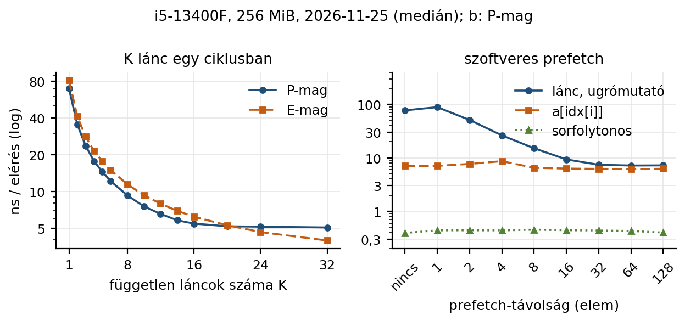

Három ciklus ugyanakkora, 256 MiB-os memóriaterületből olvas.
Sorfolytonos összegzésnél egy 8 bájtos elem 0,39 ns, véletlen indexeken
keresztül (a[idx[i]]) 7,1 ns, véletlen sorrendű láncolt
lista bejárásánál (p = p->next) 77 ns (i5-13400F, P-mag,
2026-11-25). A Lokalitás és a memóriahierarchia
alapján a DRAM egy elérése 70–80 ns. A harmadik ciklus ezt fizeti meg; a
második ugyanannyi sort hoz a DRAM-ból, mégis tizedannyit vár; az első
még azt is elrejti.
A különbség nem a hibák számában van, hanem abban, hogy a hibák egymás mellett futhatnak-e, és hogy a hardver előre el tudja-e indítani őket. Ez a két ötlet, a nem blokkoló cache és az előbetöltés (prefetch), a memóriafal elleni legfontosabb eszközök: a késleltetést nem szüntetik meg, hanem elrejtik.
Aki nyolc csomagot rendel, és mindegyiket csak az előző megérkezése után adja fel, nyolcszor várja ki a szállítási időt. Aki egyszerre adja fel őket, egyszer. A láncolt lista az első eset: a következő cím az előző adatban van, nem lehet előre megrendelni. A tömbbejárás a második. Az előbetöltő pedig olyan raktáros, aki a rendelések mintájából kitalálja, mit fog kérni a vevő, és előre elindítja.
Figyelje meg a 100. ciklusnál húzott vonalat: a függő láncban ekkor egyetlen hiba van úton, a négy MSHR-es gépben négy, a nyolcasban nyolc.
A blokkoló cache egy hiba alatt nem fogad új kérést. A mai processzorok cache-ei nem blokkolók (non-blocking):
Definíció. Az MSHR (miss status holding register) a folyamatban lévő hibákat nyilvántartó regiszter: tárolja a kért sor címét, a várakozó utasítások célregisztereit és a sor állapotát. Ha egy második utasítás ugyanarra a sorra hibázik, nem indul új kérés, hanem ugyanahhoz a bejegyzéshez csatlakozik. Az MSHR-ek száma korlátozza, hány különböző hiba lehet egyszerre úton; ha elfogytak, a következő hiba vár.
A hibák átfedéséhez a magnak is meg kell találnia a független betöltéseket: a sorrenden kívüli mag az ablakában (átrendezőpuffer, ROB – Regiszterátnevezés, ROB és spekuláció) lévő utasítások közül elindítja azokat, amelyek címe már ismert. Egy láncolt listában a következő betöltés címe az előző eredménye, ezért az ablak mérete hiába nagy.
Definíció. A memóriaszintű párhuzamosság (memory-level parallelism, MLP) az egyszerre folyamatban lévő hibák átlagos száma, azon az időn számolva, amíg legalább egy hiba úton van.
Az Egy modern mag anatómiája alfejezet Little-törvénye a memóriára: ha hiba indul időegységenként, és mindegyik ideig van úton, akkor átlagosan hiba van folyamatban. Ebből az elérhető egy magos sávszélesség felső korlátja
ahol a kiadható függő hibák száma, a sorméret. Szavakban: egy mag annyi sort tud másodpercenként hozni, amennyi egyszerre úton lehet, osztva az egyes utak idejével.
A mérés ezt mutatja: a bench_chase
egymástól független láncot jár be egyetlen ciklusban.

A bal oldali ábrán a P-mag görbéje eleinte szinte szerint csökken, majd 16 lánc körül ellaposodik, 5,1 ns körül. Ez összhangban van azzal, hogy a magnak nagyjából 16 L1 kitöltő puffere (fill buffer, MSHR) van (ellenőrizendő a gyártói dokumentációban). Az E-mag görbéje még 32 láncnál is csökken. Fontos, hogy a növelésével egy-egy lánc lépése lassabb lesz (32 láncnál kb. 162 ns a 70 helyett): a kérés már a magban is sorban áll egy szabad MSHR-re.
Az előbetöltő (prefetcher) a hibák vagy a hozzáférések mintájából jósolja a következő címeket, és a sorokat a kérés előtt a cache-be hozza.
StridePrefetcher bizalma új lépésköznél
1, ismétlődésnél nő, és 2-től kér, azaz a harmadik egyenletes
hozzáféréstől.Két paraméter szabja meg, mennyire agresszív az előbetöltő. Az előretartás (prefetch distance) azt mondja meg, mennyivel a program előtt jár: túl kicsi értéknél a sor késik, túl nagynál a sor a használat előtt kiszorulhat, és a folyam végén több a fölösleges kérés. A fokszám (degree) azt, hány sort kér egyszerre: nagyobb fokszám gyorsabban tanul fel egy folyamot, de pontatlan mintán több sávszélességet pazarol és jobban szennyez. A hardver ezért gyakran a megfigyelt pontosság alapján maga állítja az agresszivitást.
A processzorokban több ilyen is dolgozik, szintenként külön; típusuk és küszöbeik termékfüggők és ritkán dokumentáltak (ellenőrizendő).
Definíció. A prefetch négy mérőszáma:
Gépi tanulásos prefetchereket a kutatás vizsgál, a könyv nem tárgyalja.
A táblázat sorai a mintát, oszlopai a prefetchert adják; minden cella a lefedettséget és a pontosságot mutatja, zárójelben a késő kérések számát. Figyeld meg a harmadik oszlopot: a előretartású lépésköz-prefetcher majdnem mindig pontos, mégsem fed le semmit, mert minden kérése késik. A negyedik sorban pedig a két összefésült folyam ugyanarról az utasításcímről jön, ezért a lépésköz sosem ismétlődik, és egyetlen kérés sem indul.
A programozó (vagy a fordító) is kérhet előbetöltést; g++ és Clang
alatt a __builtin_prefetch beépített függvénnyel
(paramétere a cím). Csak tipp: nem okoz hibát, nem változtat az
eredményen. A jó prefetch-távolság akkora, hogy a sor
megérkezzen, mire sorra kerül:
ahol
egy iteráció ideje. A mért chase_jump kernel minden
csomópontban tárol egy
elemmel előre mutató ugrómutatót (a
code/bench/bench_chase.cpp-ből):
__attribute__((noinline)) static Node* chase_prefetch(Node* p, size_t steps) {
for (size_t i = 0; i < steps; i += 16) {
#pragma GCC unroll 16
for (int k = 0; k < 16; ++k) {
__builtin_prefetch(p->jump);
p = p->next;
}
}
return p;
}A jobb oldali ábra három tanulsága: a láncnál az ugrómutató 77 ns-ról
7,2 ns-ra gyorsít (d = 64), mert az előbetöltés visszaadja a független
hibákat; az indirekt elérésnél alig segít (7,1 → 6,1 ns), mert a mag
magától is átfedi a címeket; a sorfolytonos olvasásnál kis távolsággal
kissé ront (0,39 → 0,44 ns), mert a hardveres előbetöltő már elvégezte a
dolgot, a plusz utasítás pedig csak teher. A
eset a láncnál rosszabb a semminél (89 ns): az ugrómutató ekkor pontosan
a next, amelyet a mag úgyis azonnal betölt, tehát nyerni
nem lehet vele (a lassulás pontos okát ez a mérés nem mutatja meg).
Továbbvitt eredmény. Az MLP és a prefetch: a
független hibák átfedhetők (a korlát az MSHR-ek száma,
),
a függő láncok nem; a hardveres és szoftveres prefetch csak akkor segít,
ha a cím előre ismert és a kérés időben indul. Erre épül a Memóriavezérlő, sávszélesség és mérés, az Összeköttetések és NUMA és az Esettanulmány: mérésvezérelt optimalizálás; a
StridePrefetcher modellt a 2–3.
záróprojekt: cache-szimulátor és mikrobenchmark-sorozat használja
fel.
MLP. Nyolc hiba, 100 ciklus késleltetés, a mag ciklusonként egy új hibát tud kiadni.
Lépésköz-prefetcher. Egyetlen PC, a címek 1000-től 128 bájtonként, :
| Hozzáférés | Cím | Tábla: (utolsó, lépésköz, bizalom) | Kérés |
|---|---|---|---|
| 1. | 1000 | (1000, 0, 0) | – |
| 2. | 1128 | (1128, 128, 1) | – |
| 3. | 1256 | (1256, 128, 2) | 1512 |
| 4. | 1384 | (1384, 128, 3) | 1640 |
| 5. | 1512 | (1512, 128, 3) | 1768 |
Tizenhat ilyen hozzáférésnél az első négy hibázik (az 1512-es címet kérték elsőnek, ez az 5. hozzáférés), a többi 12 előbetöltött sor. A prefetcher a 3.–16. hozzáférésnél kér, 14 sort; az utolsó kettő már nem kell. Lefedettség , pontosság .
A két kézi példa a modellel:
import sys; sys.path.insert(0, "code")
from archkit import cache as C
for kw in (dict(mshrs=4, dependent=True), dict(mshrs=4), dict(mshrs=8)):
r = C.miss_timeline(8, 100, **kw)
print(f"{str(kw):32} összesen {r['total']:3}, MLP {r['mlp']:.2f}")
seq = C.stride_trace(16, 128, base=1000)
m = C.prefetch_metrics(seq, C.StridePrefetcher(distance=2), size=8192, ways=8)
print(f"hiba {m['base_misses']} -> {m['misses']}, kiadott {m['issued']}, hasznos {m['useful']},"
f" lefedettség {m['coverage']:.0%}, pontosság {m['accuracy']:.1%}"){'mshrs': 4, 'dependent': True} összesen 800, MLP 1.00
{'mshrs': 4} összesen 203, MLP 3.94
{'mshrs': 8} összesen 107, MLP 7.48
hiba 16 -> 4, kiadott 14, hasznos 12, lefedettség 75%, pontosság 85.7%Most írjuk meg a saját lépésköz-prefetchert. A cache-modellnek
bármely objektum megfelel, amelynek reset és
observe metódusa van:
class MyStride:
def __init__(self, distance=1):
self.distance = distance
self.reset()
def reset(self):
self.table = {} # pc -> (utolsó cím, lépésköz, bizalom)
def observe(self, addr, pc, miss, prefetch_hit, block):
last, stride, conf = self.table.get(pc, (None, 0, 0))
if last is not None:
d = addr - last
conf = min(conf + 1, 3) if d == stride else 1
stride = d
self.table[pc] = (addr, stride, conf)
target = addr + stride * self.distance
if conf < 2 or stride == 0 or target < 0 or target // block == addr // block:
return []
return [target]
traces = {"soros": C.sum_trace(1024), "128 B": C.stride_trace(256, 128),
"két folyam": [a for p in zip(C.stride_trace(256, 64, pc=0x100),
C.stride_trace(256, 192, base=1 << 20, pc=0x104)) for a in p],
"lánc": C.chase_trace(4096, steps=256)}
print("minta d késl. saját archkit késő [lefedettség]")
for name, t in traces.items():
for d, lat in ((1, 8), (16, 8)):
a = C.prefetch_metrics(t, MyStride(d), 8192, 64, 8, latency=lat)
b = C.prefetch_metrics(t, C.StridePrefetcher(distance=d), 8192, 64, 8, latency=lat)
print(f"{name:11} {d:2} {lat:5} {a['coverage']:5.1%} {b['coverage']:7.1%}"
f" {a['late']:4}")minta d késl. saját archkit késő [lefedettség]
soros 1 8 0.0% 0.0% 63
soros 16 8 98.4% 98.4% 0
128 B 1 8 0.0% 0.0% 253
128 B 16 8 93.0% 93.0% 0
két folyam 1 8 0.0% 0.0% 506
két folyam 16 8 93.0% 93.0% 0
lánc 1 8 0.0% 0.0% 0
lánc 16 8 0.0% 0.0% 0A saját változat minden sorban az archkit-tel egyező
eredményt ad. A
előretartás 8 hozzáférésnyi késleltetés mellett mindig késik (a
lefedettség nulla),
viszont időben ér oda. A véletlen láncon nincs mit felismerni. A
modellben a késleltetés hozzáférésszámban mért: valódi
gépen ciklusokban telik, és a lépésköz-prefetchernél a
szerepe ugyanez.
Végül a mért adatok és a Little-törvény:
from archkit import perf
_, mlp = perf.read_bench_csv("figures/data/ca049-mlp.csv")
t = {int(r["chains"]): float(r["median_ns_per_access"]) for r in mlp if r["core"] == "P"}
for k in (1, 2, 4, 8, 16, 32):
print(f"K = {k:2}: {t[k]:6.2f} ns/elérés, {64 / t[k]:5.2f} GB/s, "
f"gyorsulás {t[1] / t[k]:5.2f}x")
_, pf = perf.read_bench_csv("figures/data/ca049-prefetch.csv")
p = {(r["kernel"], int(r["distance"])): float(r["median_ns_per_access"]) for r in pf}
print("d lánc modell max(t0/d, 7,2)")
for d in (2, 4, 8, 16, 32):
model = max(p["chase_jump", 0] / d, p["chase_jump", 64])
print(f"{d:2} {p['chase_jump', d]:7.1f} {model:7.1f}")K = 1: 69.65 ns/elérés, 0.92 GB/s, gyorsulás 1.00x
K = 2: 35.32 ns/elérés, 1.81 GB/s, gyorsulás 1.97x
K = 4: 17.75 ns/elérés, 3.61 GB/s, gyorsulás 3.93x
K = 8: 9.30 ns/elérés, 6.88 GB/s, gyorsulás 7.49x
K = 16: 5.45 ns/elérés, 11.74 GB/s, gyorsulás 12.78x
K = 32: 5.07 ns/elérés, 12.63 GB/s, gyorsulás 13.75x
d lánc modell max(t0/d, 7,2)
2 51.2 38.7
4 26.4 19.4
8 15.1 9.7
16 9.3 7.2
32 7.4 7.232 láncnál egy mag kb. 12,6 GB/s-ot hoz a DRAM-ból, nagyjából 13,8-szoros MLP-vel. A sorfolytonos olvasás 8 B / 0,39 ns GB/s ennél is több: a valószínű ok, hogy a külsőbb szintek előbetöltői a mag MSHR-jein felül tartanak kéréseket úton. A prefetch-modell a tendenciát jól adja, de optimista: a valódi lánc a vártnál lassabban közelít az aljához.
__builtin_prefetch hozzáadása
lassít. Ok: a hardver már magától előbetölt (soros
minta), vagy a távolság rossz (túl korán: kiszorul, túl későn: nincs
haszna). Javítás: csak mért haszonnal tartsa meg, és
több távolságot mérjen.1. (A) Tíz független hiba, 100 ciklus késleltetés, a kiadási köz 0. Hány ciklus 1, illetve 5 MSHR-rel?
2. (A) Egy magnak 10 MSHR-je van, a memória késleltetése 80 ns, a sor 64 bájt. Mekkora az egy magos sávszélesség felső korlátja?
3. (B) Kövesse kézzel a lépésköz-táblát a 0, 64, 128, 200, 264 címsorozaton (). Mikor ad ki kérést?
4. (B) Egy ciklus egy iterációja 6 ns, a hiba 90 ns.
Mekkora legalább a prefetch-távolság? Mit ad a mért
chase_jump adatsorozat a becslés környékén?
5. (C, programozós) Módosítsa a
MyStride osztályt „ragadós” bizalommal: eltérő lépésköznél
csak csökkentse a bizalmat, és a lépésközt akkor cserélje, ha a bizalom
1 volt. Hasonlítsa össze a kettőt egy olyan nyomon, amelyben minden
negyedik, illetve nyolcadik lépés 1024 bájtot ugrik még pluszban
().
6. (C, mérős) Futtassa a saját gépén a
bench_chase --mode prefetch --kib 262144 mérést, és
illessze a
modellt. Milyen távolságnál telítődik?
A nem blokkoló cache a hibák alatt is szolgál találatokat és új
hibákat; a folyamatban lévő hibákat az MSHR-ek tartják nyilván. A
memóriaszintű párhuzamosság (MLP) az átfedő hibák átlagos száma; a
Little-törvény szerint egy mag sávszélessége legfeljebb
.
Függő láncnál MLP = 1. A mérésen 32 független lánc kb. 13,8-szoros
gyorsulást adott. A hardveres prefetch (következő sor, lépésköz-tábla,
folyampuffer) a mintából jósol; a lefedettség, a pontosság, az
időszerűség és a szennyezés méri. A szoftveres prefetch távolsága
legalább
;
a láncnál ugrómutatóval segít, soros olvasásnál nem. Az
archkit.cache.StridePrefetcher a modell alapja.
1. 1 MSHR:
ciklus. 5 MSHR: két hullám,
ciklus. (miss_timeline(10, 100, mshrs=5, issue_gap=0).)
2. GB/s.
3. 0: (0, 0, 0). 64: (64, 64, 1). 128: (128, 64, 2), kérés 192. 200: lépésköz 72, bizalom 1, nincs kérés. 264: lépésköz 64, de ez eltér a 72-től, bizalom 1, nincs kérés. Egyetlen kiugrás két hozzáférésre némítja el a prefetchert.
4. . A mérésben környékén 9,3 ns, a 32–64-es tartományban 7,2–7,4 ns: a becslés a nagyságrendet adja, a biztonság kedvéért nagyobb távolság kell.
5.
class Sticky(MyStride):
def observe(self, addr, pc, miss, prefetch_hit, block):
last, stride, conf = self.table.get(pc, (None, 0, 0))
if last is not None:
d = addr - last
if d == stride:
conf = min(conf + 1, 3)
elif conf > 1:
conf -= 1 # egy kiugrás nem törli a lépésközt
else:
stride, conf = d, 1
self.table[pc] = (addr, stride, conf)
target = addr + stride * self.distance
if conf < 2 or stride == 0 or target < 0 or target // block == addr // block:
return []
return [target]
def holes(n, every):
out, a = [], 0
for i in range(n):
out.append(C.MemAccess(a, False, 4, 0x100))
a += 64 + (1024 if i % every == every - 1 else 0)
return out
for every in (4, 8):
for name, pf in (("alap", MyStride(1)), ("ragadós", Sticky(1))):
m = C.prefetch_metrics(holes(512, every), pf, 8192, 64, 8)
print(f"minden {every}. {name:8}: lefedettség {m['coverage']:.1%}, "
f"pontosság {m['accuracy']:.1%}")minden 4. alap : lefedettség 25.0%, pontosság 50.0%
minden 4. ragadós : lefedettség 74.6%, pontosság 74.9%
minden 8. alap : lefedettség 62.5%, pontosság 83.3%
minden 8. ragadós : lefedettség 87.1%, pontosság 87.5%Az alapváltozat minden kiugrás után két hozzáférésre elnémul. A ragadós változat megtartja a 64 bájtos lépésközt, így kiugrásonként csak az előtte kiadott kérés vész kárba és a kiugró elem hibázik, ezért jóval nagyobb a lefedettsége. Ára: ha a minta valóban megváltozik, a ragadós táblának több lépés kell az átálláshoz.
6. A parancs a
figures/data/ca049-prefetch.csv-hez hasonló CSV-t ad (a
--cpu rögzítéssel). A
a 0 távolságú sor, az alsó érték a legnagyobb távolságoké; a telítődés
ott van, ahol
az alsó értékhez ér. A jegyzőkönyvben adja meg a processzort, a fordítót
és a nagy lapok beállítását.